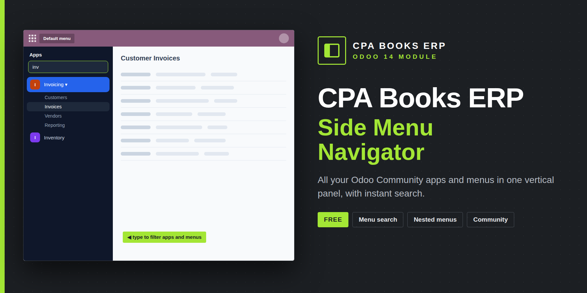

A vertical side menu for Odoo 14 Community. All apps and their sub-menus sit in one panel on the left, with a search box that finds any app or menu item as you type.

| Task | Odoo Community top menu | Side Menu Navigator |
|---|---|---|
| Switch to another app | Open the apps dropdown, then pick | One click in the side panel |
| See an app's menus | Only after the app is opened | Expand any app in place |
| Find a menu item | Browse menus one by one | Type part of its name in the search box |
| Know where you are | App name in the top bar | Current app highlighted and its menu item marked |
01All apps in one panel. Built from the user's own menu, so access rights are respected.
02Expandable sub-menus. Menu groups open in place at every level.
03Instant search. Filters apps and menu items as you type and opens the matching apps.
04Colored letter tiles. Each app gets a fixed color and initial, so it is easy to spot.
05Active app highlighted. The current app stays open and the selected menu is marked.
06Default menu toggle. A button in the top bar and in the user menu brings back the standard menu bar.
07Cleaner top bar. While the side menu is on, the duplicate app name and section menus are hidden.
08No configuration. Install, reload, and every user has the side menu.
| Module | side_menu_navigator |
| Odoo | 14.0 Community |
| Depends on | web |
| Enterprise code | None used or copied |
| Settings | None needed |
| License | OPL-1 · CPA Books ERP |
Yes. It is made for Odoo 14 Community and needs only the web module.
Click the app name to open it. Click the arrow next to it to only expand its menus.
Press Default menu. Reloading the page shows the side menu again; uninstalling removes it.
Yes. Help with installation is available from the CPA Books ERP team.
Available for Odoo 14 now. Need Side Menu Navigator on another version? We upgrade it for you.
Questions or help with installation? The CPA Books ERP team replies on WhatsApp and email.